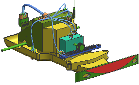
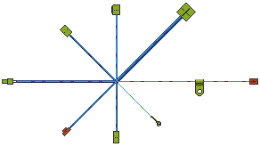

Open the assembly
-
Open rte1_car_assy_4 or if you prefer, your saved version of the part.

Make sure Use Partial Loading is turned off when you open it.
-
In the Assembly Navigator
 , make the harness the displayed part.
, make the harness the displayed part.
